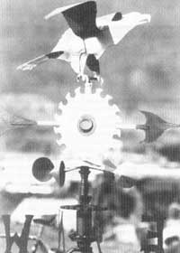

How to turn spare parts into decorative wind-pointers.
PHOTOGRAPH © LYNDEN O. HARE
I'D BEEN IMPRESSED FOR YEARS BY
weather vanes I'd seen around the country. And for years the large barns on our farms in southern Oregon had gone undressed, so to speak. So one day I decided to fire up my welder and build a vane from the junk I had lying around the ranch. As I have one of the finest collections of junk in the area-much to the dismay of my wife-I had and have plenty to choose from.
Well, to get to the construction: The first thing to build was a base that would fit the peak of the barn. The base was an old piece of 3" angle iron about 4' long with two pieces of bed-rail angle iron 2' long welded perpendicular to the center. As our barn is oriented true north and south, I simply cut out letters for each wind direction from an old truck hood and welded them to the appropriate piece of angle iron, according to the way it would sit atop the barn. I welded two braces to the center of the base to stabilize and secure it to the roof. It is important that the base be level so that the center of gravity is perfectly centered.
The next step is to weld or attach an old front-wheel spindle to the center of the base. This is what the upper part of the vane will rotate on. A front-wheel spindle and hub, properly packed with grease, is probably the best set of bearings you could obtain for this purpose and will last for years with little or no maintenance. I then cut out the center of an old wheel that matches the bolt pattern of the hub. The upper part of the vane will be mounted on this, as it allows the weather vane to be bolted together into two parts for ease of installation.
Weld a short piece of hollow driveline, with the solid spline shaft part pointed upward, to the wheel center. Tack-weld a good secondhand thro-out bearing around the spline shaft that will carry the wind cups. The bearing will allow the wind cups to rotate independent of the rest of the vane. It is important to mount the cups on a ring that clamps to the bearing, either by bent tabs or bolts, as welding them to the bearing itself will warp and ruin it.
I made cones out of old water-heater jacket tin and then welded them to push rods which were in turn welded to the ring. After I mounted the wind cups assembly to the spline shaft. I cut a hole in an old moon hubcap and mounted it over the thro-out bearing to keep out moisture. The bearing should be well lubricated with a very light grease so it will rotate with the slightest breeze. Then to the top of the spline shaft I welded an old low-tempered buzz-saw blade. (A high-tempered blade will crack when welded on.) Weld the arrow, which is made out of bed-rail angle iron and sheet metal from a junk-car body, horizontal to this. The rooster (or whatever symbol you decide to use) mounted on the top is fashioned in the same manner. It is important to mount the vane securely and level so it will rotate properly. And-as with any type of roof work-extreme caution should be taken when installing the vane!
Our barn sits right next to the highway that leads to the Oregon Caves National Monument, and someone is always stopping to take pictures of the vane. Soon after I put up the first vane I built, a tourist from Los Angeles rolled his station wagon into my barnyard and demanded that I take it down. I asked him what he was talking about. He said, "Name your price-I want to buy it." Well, I named my price and now it's somewhere in North Hollywood, blowing in the Santa Ana wind. Since then, I have sold three or four and could have sold more.
I sold another to a local rancher who raises Black Angus cattle, and have orders for several more-if I ever get the time to build them. But anyone with a welder and a torch can put one together, so I hope to see vanes popping up on buildings all over the country.
|
|
 |
|